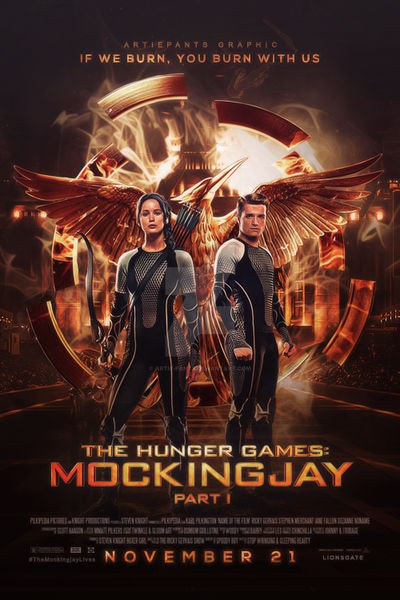
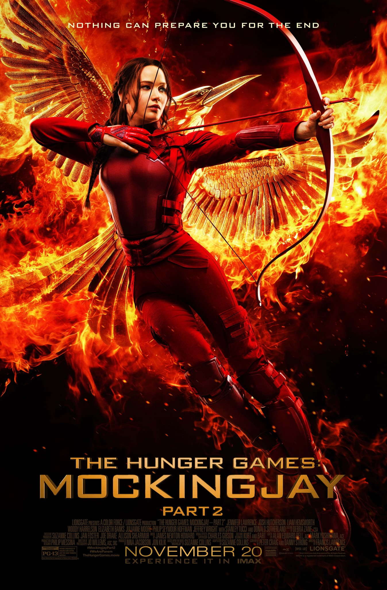
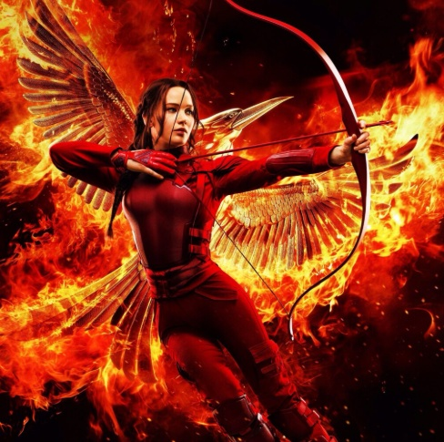

Los Juegos del Hambre

Los juegos del hambre es una novela distópica que sigue a Katniss Everdeen, una joven que vive en un país dividido en distritos controlados por un gobierno autoritario. Cada año, el Capitolio obliga a los distritos a enviar participantes a un evento mortal televisado. La historia destaca por su ritmo ágil, tensión constante y crítica social hacia la desigualdad, el poder y el espectáculo mediático. Suzanne Collins construye un mundo convincente y un personaje principal fuerte y humano.
Autora: Suzanne Collins
Valoración: 💛💛💛💛💛
Películas
Los Juegos del Hambre (2012)
Katniss se ofrece como voluntaria en un juego mortal televisado.En Llamas (2013)
Katniss y Peeta regresan a la arena en una edición especial.

Sinsajo Parte 1 (2014)
Katniss se convierte en símbolo de la rebelión.

Sinsajo Parte 2 (2015)
La guerra final define el destino de Panem.
Personajes más queridos

Katniss Everdeen
La chispa de la rebelión

Peeta Mellark
El corazón del Distrito 12.

Haymitch
Mentor estratégico.
Finnick Odair
Carisma y lealtad.